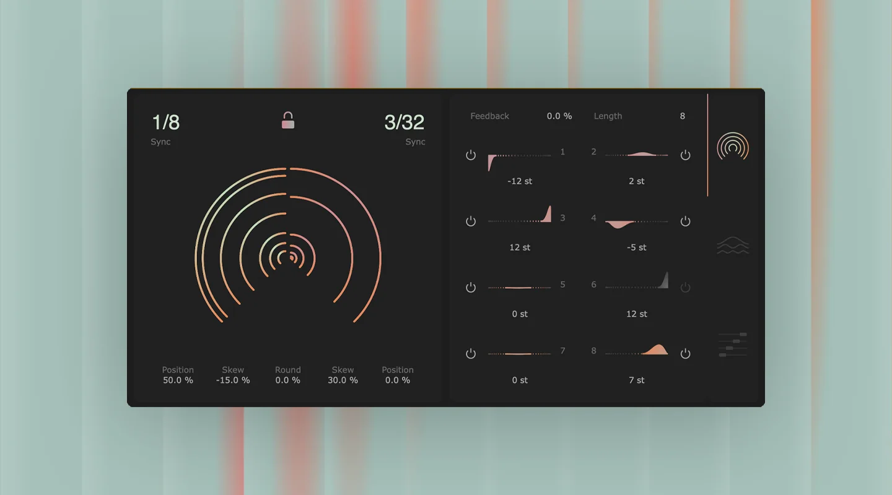
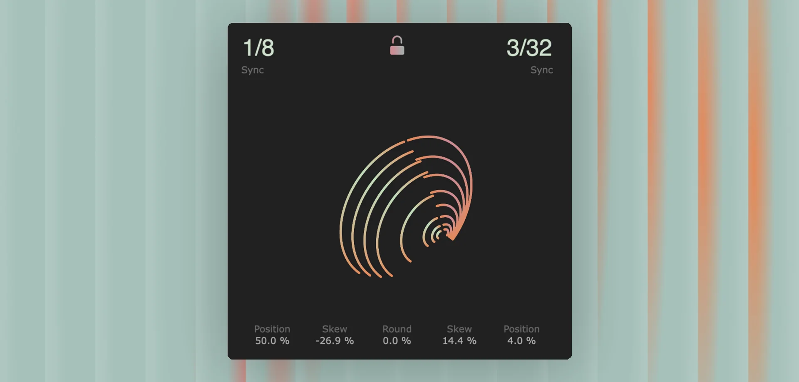
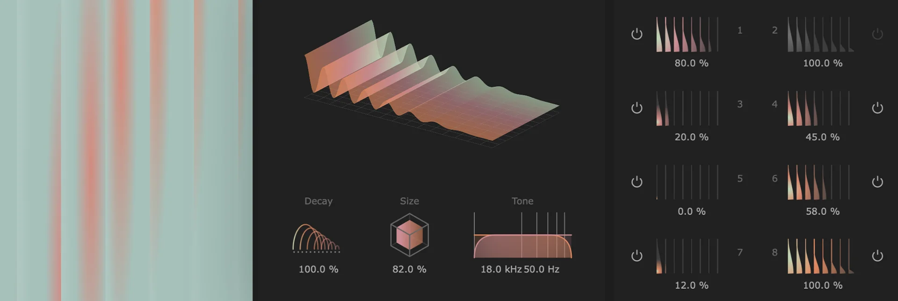

Petal is a pitch-shifting multi-tap delay plug-in.
Building on guitar pedal-like simplicity, Petal allows the musician to flutter form out from a handful of notes, or
bathe in the fountain of arpeggiated feedback.
Originally in the realm of Max for Live, this Petal adds a dedicated plate reverb, a decisively analog-style pitch
shifter, and controls for more color and character.
Welcome to the garden of earthly delays.

The heart of petal is the pitch-shifting multi-tap delay. Petal pulls a single note apart into complex rhythms and pitch
contours. A simple click and drag interface makes it easy to run into surprises, wherever you turn.
A dedicated delay line, separate from the main tap delay, lets Petal to sing over and over again.

Petal's lush plate reverb algorithm adds increased blend and spread to the tap delay. Individual taps can be sent to the
reverb in parallel, pulling some taps into focus and others blurred away.
The delay and reverb levels can be set individually, allowing for subtle flicker of reverb in the background, or a
washed-out no-delay, reverb only texture.
Minimum Requirements:
Windows: Windows 10 or 11
Mac: macOS 10.14 or newer